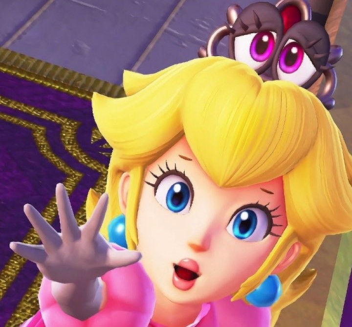

Personajes
Cappy
La gorra de Mario, llamada "Cappy," es una parte esencial de su aspecto en este juego. Cappy tiene forma de sombrero de copa y es de color rojo. Tiene ojos blancos en la parte frontal y una sonrisa. Cuando Mario se une a Cappy, la gorra se convierte en un sombrero más realista con ojos y boca, permitiendo a Mario usarla para atacar y realizar una variedad de acciones especiales.
Mario
es valiente, optimista y está decidido a rescatar a la Princesa Peach y detener los planes de Bowser. Siempre está dispuesto a enfrentar desafíos y aventuras, y su determinación es una de sus características más notables.

Peach
Peach es conocida por su personalidad amable, gentil y compasiva. Es amiga cercana de Mario y Luigi y a menudo se encuentra en situaciones de rescate debido a los intentos de secuestro de Bowser. En "Super Mario Odyssey," nuevamente es secuestrada por Bowser y llevada alrededor de varios reinos por todo el juego.

Bowser
Bowser es conocido por ser el archienemigo de Mario y por su obsesión con secuestrar a la Princesa Peach y casarse con ella. En "Super Mario Odyssey," su objetivo principal es llevar a cabo esta boda forzada, y secuestra a Peach, así como a la hermana de Cappy, Tiara, para usarla como adorno en su vestido de novia.